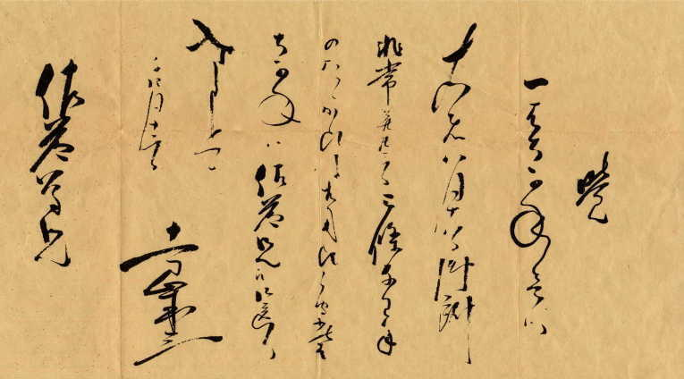
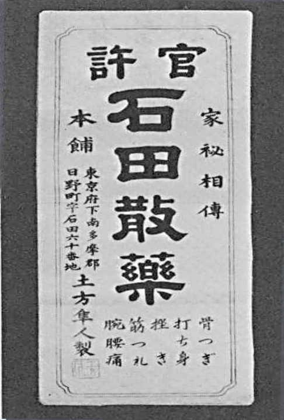
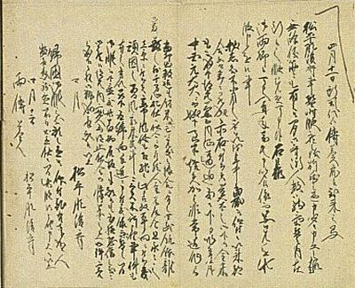
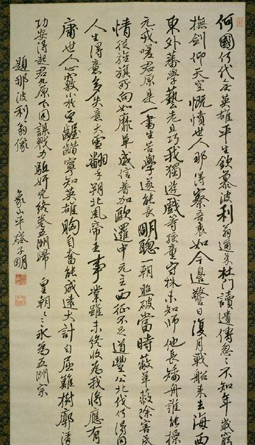
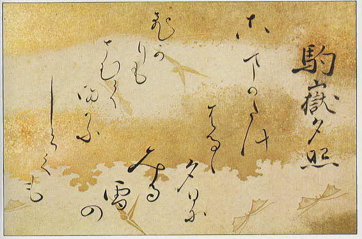
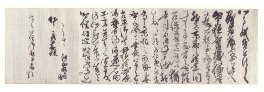
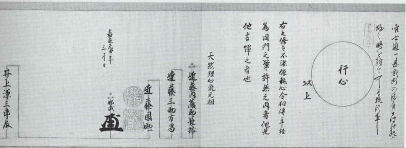

|  |
| Scroll by Hijikata |
|  |
| Ad for Ishida powder |
|  |
| Scroll by Lord Matsudaira |
|  |
| Poem about Napoleon by Sakuma |
 |
| Letter written by Kondou |
|  |
| Waka (short poem) by Hijikata |
|  |
| Letter written by Okita |
|  |
| Inoue's Tennen Rishin license |
 |
| Hanging scroll by Katsu Kaishu |
 |
| Hijikata poetry book cover |